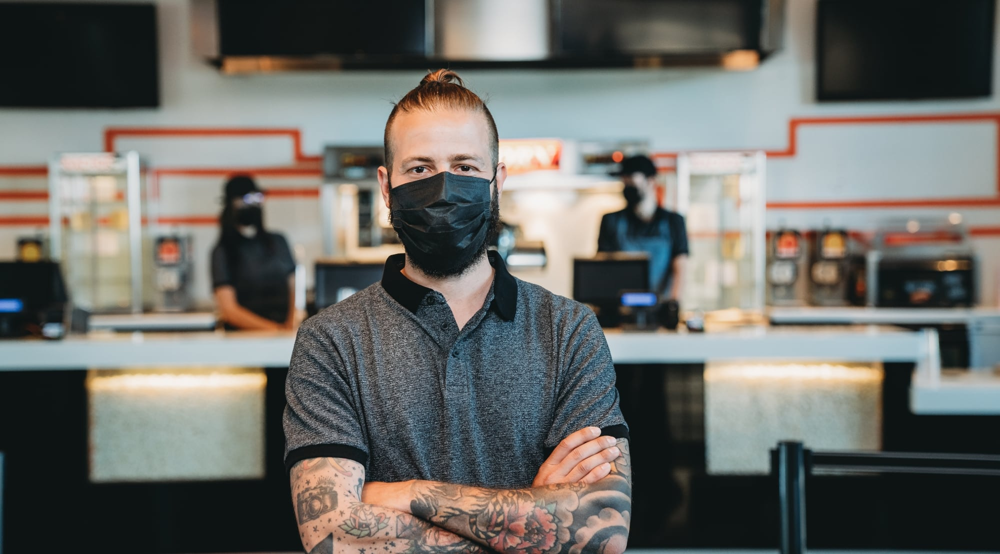

By having their employees know they are part of something bigger,
When the Covid-19 pandemic caused a near-total shutdown of social experiences, it presented an existential crisis not only for public-facing businesses, but also for their employees. Used to working with a continuous flow of new faces, employees once intimately connected to the community were suddenly prevented from not only their social interactions, but their work community as well. Knowing their insurance coverage was in good hands allowed Cineplex the room to provide everything it could to its employees at this critical moment.
Allison Dell, Senior Vice President, Head of Human Resources at Cineplex, knew that with their theatres and entertainment venues empty, and corporate office employees working from home, Cineplex employees were at risk of feeling ‘out-of-sight, out of mind.’ So during the pandemic, Cineplex made concerted efforts to ensure their employees knew their importance. “We wanted our employees to know that we’re all in this together, and we care very deeply for one another,” says Dell.
“We put a significant focus on well-being through the pandemic because we work together through the good times and the bad.”
A pivot unlike any other in history
As cinemas and entertainment venues were closed to comply with governmental regulations, there were necessary adjustments. But in cases where employees had to be let go, Cineplex stepped up to provide care and support that went far beyond the scope of most employers. Cineplex stayed in contact with those laid off, and made strides to find them work with other retailers who were hiring. “We wanted to make accelerated employment opportunities available for our own staff in other organizations because we really care for their mental and financial well-being,” Dell says.
Dell points to Cineplex’s strong culture of oneness and support, exemplified by the company’s rally cry of ‘One Cineplex,’ which underpins their wellness work. Rommel Velarde, Cineplex’s Vice President of Total Rewards, agrees, saying the idea of ‘One Cineplex’ has created resilience and grit for both leaders and employees. “In addition to the closures, there have been so many changes to restrictions in our venues, in regards to concessions, masks, and vaccine requirements. It creates a lot of stress in our theatres and entertainment locations, as well as in the corporate ecosystem that supports our businesses,” Velarde says. But the support system that Cineplex has created between employees, leaders and corporate teams encourages colleagues to think of themselves as something larger, and to care deeply about their work, and create better experiences for guests.
As proof, Dell notes that at the peak of the pandemic, despite the obvious setbacks incurred by theatre closures, Cineplex’s employee sentiment scores—a gauge of how employees rate their employers—were the highest they’ve ever been. In these surveys, employees singled out culture, leadership, and immediate management as the best things about working for Cineplex.
An employee who works at the home office in Toronto shares, “I’m fortunate that over the course of my time at Cineplex, both of my managers have made it their priority to understand how I best perform. Every detail, from the support I need to excel in my role to what maximizes my satisfaction and performance, has been considered.” They continued to share, they appreciate that Cineplex recognizes mental health as a part of overall health wellness, and that employee’s entire lived experiences effects their full performance.

Recognizing the stigma of mental health, and seeing how we can do better
Mikkaela Fernandez, Cineplex’s Manager of Total Rewards, credits Desjardins Insurance’s client service with helping to invigorate Cineplex’s advocacy of employee wellness by providing material support for employee health evaluations, critical care, and financial literacy. Because Cineplex uses Desjardins for both benefits insurance and retirement and savings plans, Fernandez notes how helpful it has been to have Desjardins’ expertise on hand to tackle the changing landscape of mental wellness. “We do quarterly meetings with Desjardins to discuss mental health and awareness trends, and how they might be applied to our programs to help our employees,” Fernandez says. Initiatives such as the Employee Family Assistance Program, which is a benefit that will soon be extended to hourly staff, have been met with great acclaim, from employees whose positions wouldn’t normally grant access to such workplace advantages. It’s this type of close contact, and constant communication with a trusted partner that helps Cineplex succeed with employee ratings.
During the pandemic, Cineplex also offered educational sessions to employees, for which Desjardins provided wellness experts. Velarde noted the importance of these sessions, saying that being proactive about mental health and wellness is the best way to approach the subject, and allows for a more well-rounded approach. “When we look at well-being, we look at total well-being. Financial well-being is a part of that, and financial literacy improves our employee’s ability to live well.”
To further address their employee’s wellness, Cineplex rolled out ‘The Working Mind,’ a program created in partnership with the Mental Health Commission of Canada, that provides training for front-line and corporate managers to recognize the signs of mental health strain, tackling the stigma of mental health, and providing the practical tools to build resistance to mental health challenges.
Dell also points to the introduction of well-being days, ‘ask-me-anything’ events, and town halls where employees have open-door access to interact with executives to stay up to date on information on Cineplex’s pandemic response. “We wanted to create a better loop of trust and transparency,” Dells says, demonstrating that creating an open dialogue across the corporate structure is what fortifies Cineplex.
“Listening to the voice of the employee and understanding what is most meaningful to them, and what will help them, is a big part of what we do. We make data-driven decisions, but we put as much focus on listening and understanding the One Cineplex team, in their own words.”
Desjardins Insurance refers to Desjardins Financial Security Life Assurance Company.
200 Rue des Commandeurs, Lévis QC G6V 6R2 / 1-866-647-5013
www.desjardinslifeinsurance.com